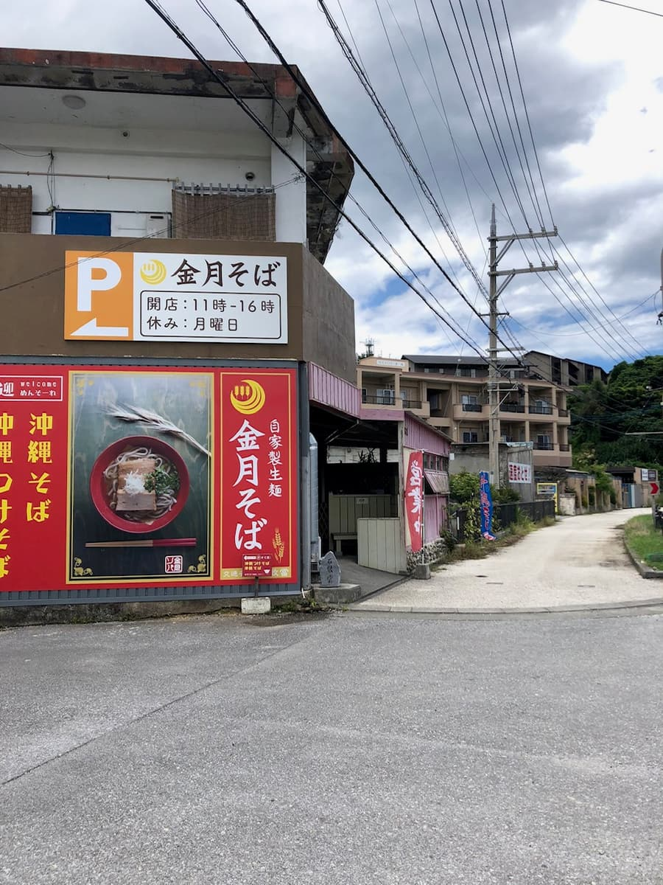
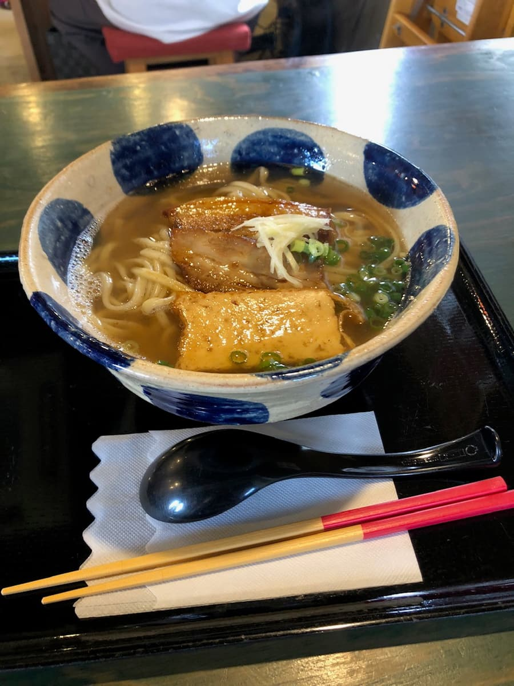
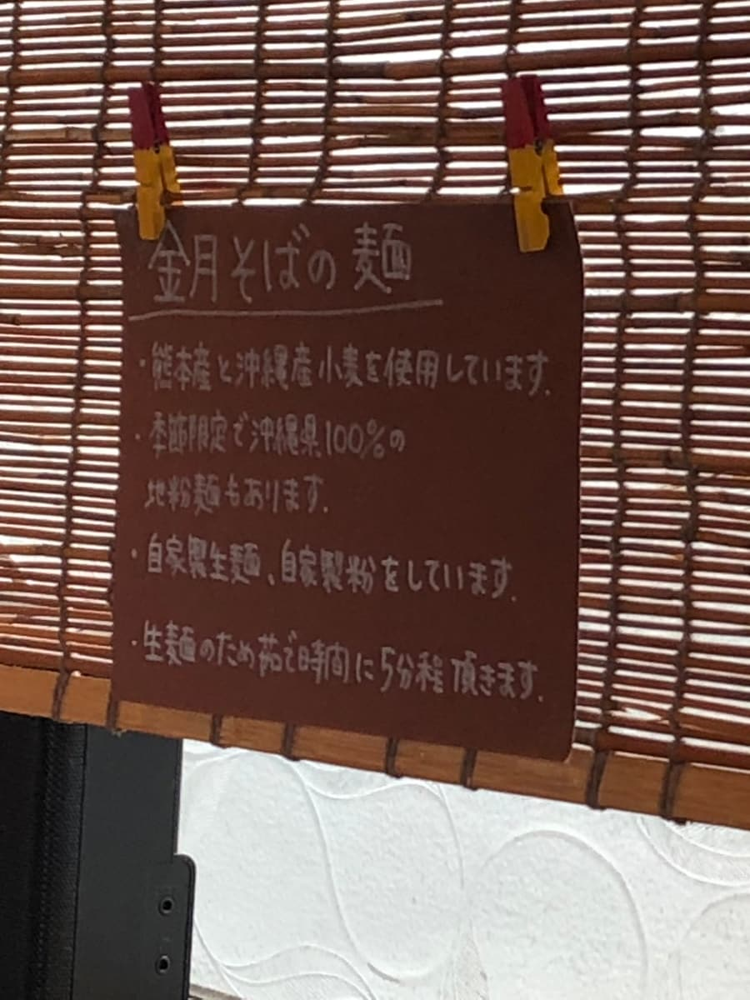

국도 58호선변의 '긴치치 소바(온나점)'. 요미탄손의 1호점에 이은 2호점인 것 같아요. 2022년 8월에 먹어 봤습니다 ㅋㅋ


긴치치 소바를 먹기 전까지는 다른 가게의 자가제면 인상 때문에 '자가제 생면=탄력 강함=단단한 식감' 같은 인상을 갖고 있었는데, 틀렸습니다^^;
이곳은 자가제 생면을 주문이 들어가면 삶는 것 같아요. 매끈쫀득한 중간 굵기 스트레이트 면이고 지금까지 먹은 가게에는 없는 식감이라 아주 맛있었습니다😀
또 국물은 8종류의 생선 육수를 사용하고 있어서, 해산물 계열의 풍미와 맛이 확실하고 면과의 궁합이 아주 좋습니다.

평가(12점/15점): 면과 국물에 특징이 있고 아주 맛있습니다. 같은 온나손 내 '나카무라 소바'가 붐벼서 들어갈 수 없을 때는 이곳도 추천합니다😀 '긴치치 소바'는 요미탄손의 국도 58호선변에도 있습니다.
면: ★★★★☆（4）
수프: ★★★★☆（4）
토핑: ★★★★☆（4）